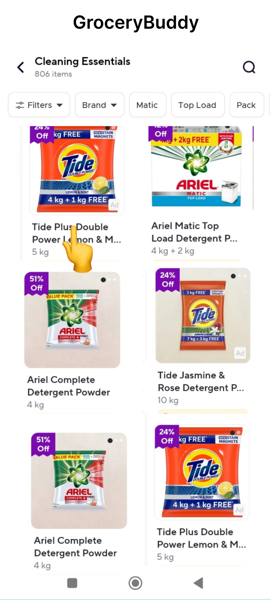
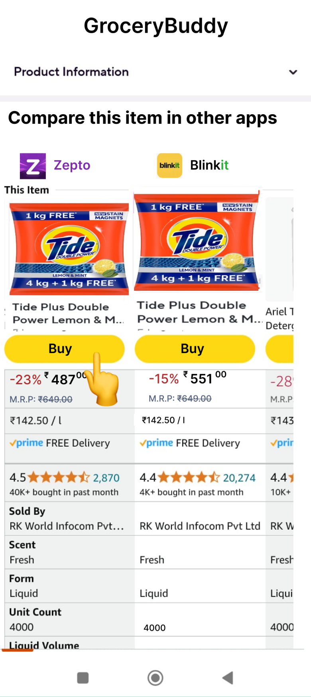
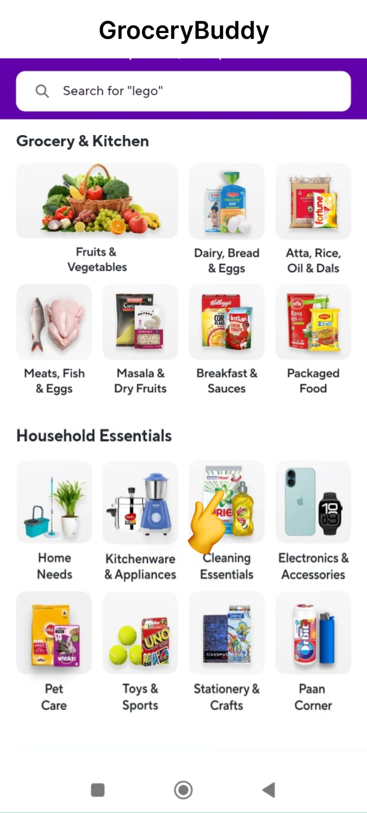
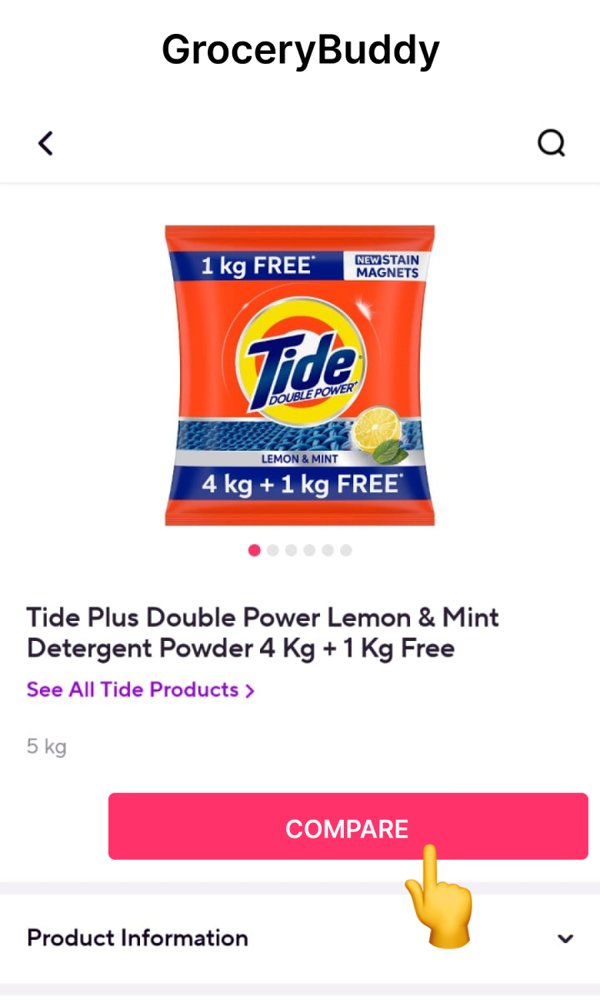
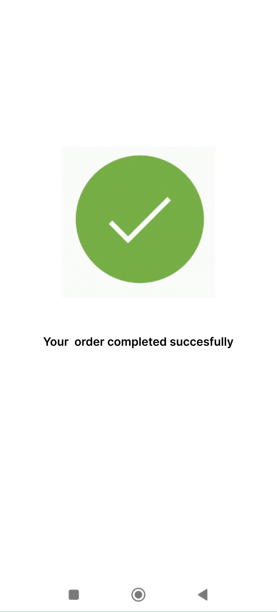
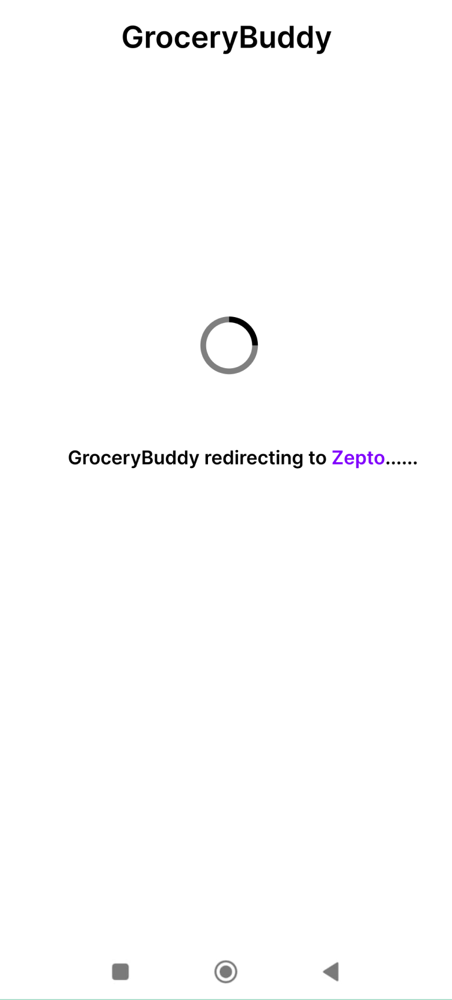

A unified app that compares prices, delivery times, and product info across Zepto, Blinkit, and Instamart — so users make confident decisions in under 2 minutes.



The Indian online grocery market is on track to reach $26–27B by 2027. Yet users buying groceries today still open 3 different apps, search the same item 3 times, and manually compare prices in their head — a process that takes 12–15 minutes on average.
No single app lets you filter by delivery speed, compare prices side-by-side, and buy from the best option — without leaving the comparison. GroceryBuddy is that missing layer.
8 competitive analyses + 4 user interviews surfaced one insight that changed the entire design direction: 45% of users prioritise delivery speed over price when buying urgently — but no existing app lets you filter by delivery time first. You always have to browse by category or brand.


45% of users said they need their groceries fast. Traditional apps make you browse to the product page before finding out delivery takes 2 hours. GroceryBuddy flips that — delivery time is a primary filter on the listing page, not buried in product details.
Result: 38% faster decisions. When users can eliminate slow options upfront, they reach their decision in one pass instead of backtracking.
Early designs showed everything — seller info, ratings, reviews, specs. It created exactly the kind of decision fatigue users were already experiencing across apps. The final comparison table shows three things only: Price · Quantity · Delivery time.
Anything else is one tap away in the expanded view. The default state drives a 3-second decision for the majority of purchases.
In the first version of the comparison table, platform logos appeared at the very bottom of each column. Users scrolling through prices lost track of which platform they were comparing. A small change — moving logos next to the product image at the top — created instant recognition.
Users now identify the platform in under 1 second without reading. Familiar brand logos do the cognitive work so the user doesn't have to.
4 user interviews + 8 competitor reviews. Key finding: no app lets users filter by delivery speed first.
5+ layout explorations on paper, testing the comparison table format and logo placement.
Defined colour, type scale, and component patterns before building screens.
Built hi-fi prototype, discovered the redirection problem, iterated with a bridging screen.
A user found the best price on Instamart — but didn't have the app installed. Tapping "Buy" dropped them into an empty app store page with no context. They had no idea why they were there or what to do next.
No context after "Buy" tap. User lands in app store or unknown state — confusion, drop-off.
Bridging screen ("Redirecting to Zepto…") + visual indicator if app isn't installed. CTA guides the install before the redirect.

Constraints sharpened the thinking. Working within a 4-week timeline forced prioritisation — I had to decide what the MVP comparison table needed and cut everything else. That discipline produced a cleaner interface than an unconstrained process might have.
The research insight changed everything. Without user interviews, I would have designed a price-first product. Learning that 45% of users care about delivery speed first completely reoriented the information hierarchy.
After wrapping the project, I came back. With more time and fresh AI tools, I revisited the screens — polishing the visual system and exploring features the first timeline didn't allow. Constraints were a starting point, not the ceiling.
Want to see the full file — research, wireframes, and hi-fi screens?